▲ 원주 뮤지엄산의 워터가든. 수면 위로 붉은 대형 조각이 놓여 있고 뒤편으로 산자락과 미술관 건물이 이어진다 사진=한국관광공사
미술관은 원래 도심에 있는 게 정상 아닌가. 그런데 정작 가장 좋은 미술관들은 죄다 산속, 강가, 예술인 마을 한복판에 흩어져 있다. 버스와 지하철로는 배차 시간을 맞춰가며 몇 번을 갈아타야 겨우 닿는 곳들이다.
반대로 자동차가 있으면 이야기가 완전히 달라진다. 경기 양평, 강원 원주, 경기 파주, 충북 청주 — 서울에서 한 시간 남짓이면 닿는 이 네 곳은 하나같이 '차로 가는 게 압도적으로 편한' 미술관들이다. 2026년 가을 기준으로 실제 운영시간과 입장료, 주차 정보, 지금 열리고 있는 전시까지 확인했다.
1. "미술관에 왜 자동차가 전시돼 있지?" — 양평 구하우스
경기 양평군 서종면, 산자락 사이 좁은 길을 한참 올라가야 나오는 이 미술관은 대중교통으로는 사실상 접근이 불가능하다. 건축가 승효상(아이아크 건축)이 설계한 노출 콘크리트 건물이 가을 단풍이 든 야산을 배경으로 서 있고, 건물 앞 잔디마당에는 야외 조각이 놓여 있다.
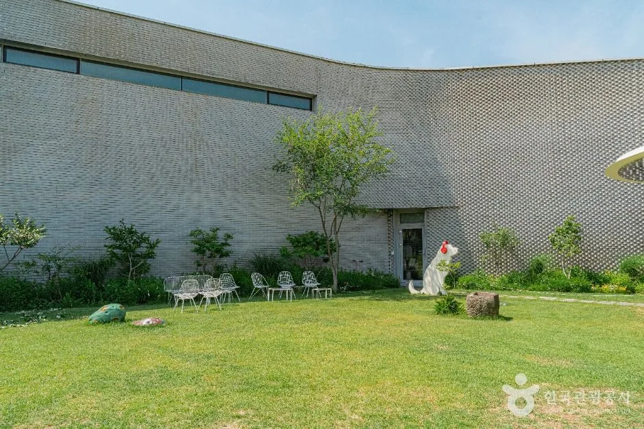
▲ 구하우스미술관의 곡선형 외벽과 잔디마당 사진=한국관광공사
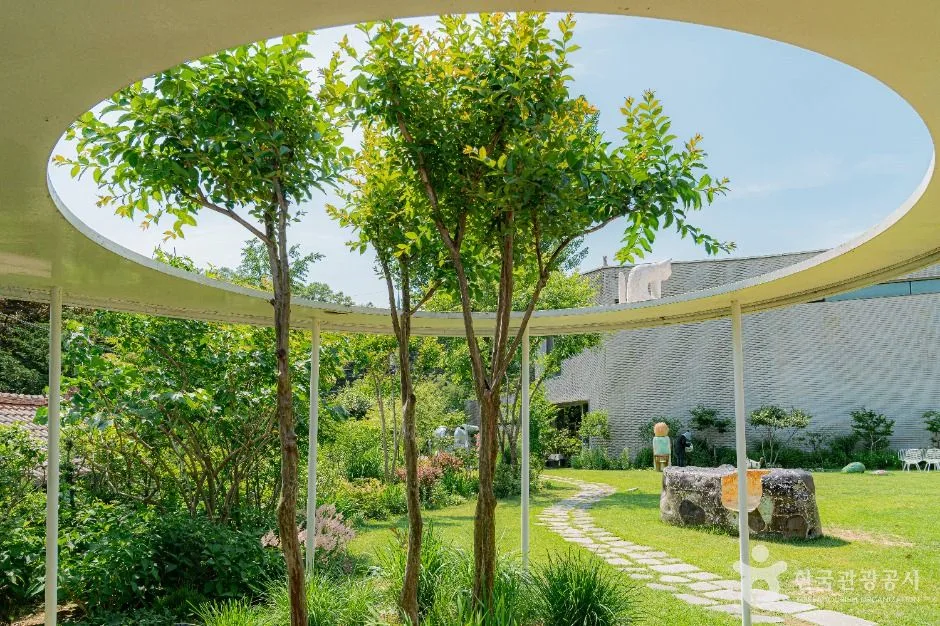
▲ 지붕을 타원형으로 열어 나무가 자라도록 한 구하우스미술관 정원 사진=한국관광공사
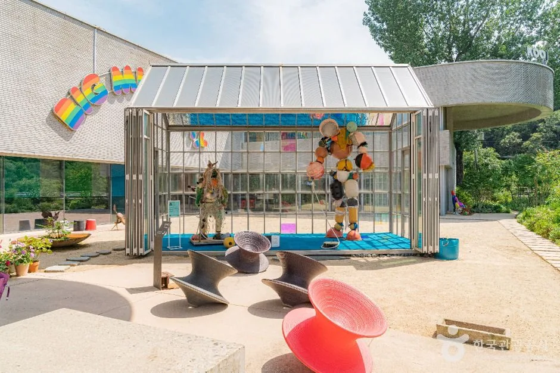
▲ 마당 한편의 유리 파빌리온에 전시된 조각 작품 사진=한국관광공사
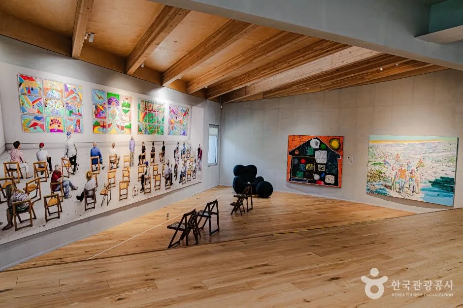
▲ 구하우스미술관 전시실 내부 사진=한국관광공사
구하우스는 이름 그대로 '구씨(具氏) 컬렉션'을 기반으로 한 사립미술관이다. 클래식 자동차, 앤티크 가구, 조명, 현대 조각 작품이 한 공간에 뒤섞여 있는 독특한 전시 구성으로 알려져 있다. 사진 촬영이 가능한 구역과 불가능한 구역이 구분돼 있으니 현장 안내를 따르는 것이 좋다.
| 항목 | 내용 |
|---|---|
| 주소 | 경기 양평군 서종면 무내미길 49-12 |
| 운영시간 | 평일 13:00~17:00(입장마감 16:00) / 주말·공휴일 10:30~17:30(입장마감 16:30) |
| 휴관일 | 매주 월·화요일(공휴일은 정상 개관), 1월 1일, 설·추석 당일 |
| 입장료 | 성인 15,000원 / 청소년 8,000원 / 어린이 6,000원 |
| 주차 | 무료 (중소형 약 20대, 대형 2대) |
✅ 방문 전 확인할 것
· 회당 관람 인원을 제한하는 예약제로 운영되는 경우가 많아, 방문 전 공식 홈페이지나 예매 플랫폼에서 잔여석을 확인하는 것이 안전하다
· 진입로가 좁고 경사가 있는 산길이므로 초행이라면 내비게이션 도착 지점을 미리 확인해둘 것
구하우스 관람 예약과 상세 안내는 공식 홈페이지에서 확인할 수 있다. 구하우스 미술관 바로가기
2. 빛과 물, 돌이 만든 미술관 — 원주 뮤지엄산
강원 원주 오크밸리 리조트 안쪽, 산으로 둘러싸인 부지에 안도 다다오가 설계한 미술관이 있다. 웰컴센터부터 플라워가든, 워터가든, 스톤가든을 거쳐 본관과 명상관, 제임스 터렐관까지 걸어서 이동하는 구조라 관람 자체가 산책에 가깝다. 앞서 소개한 헤로 이미지의 붉은 조각 '아치웨이'(알렉산더 리버만 작)가 놓인 워터가든이 특히 가을 단풍과 어우러져 인기 촬영 지점이다.
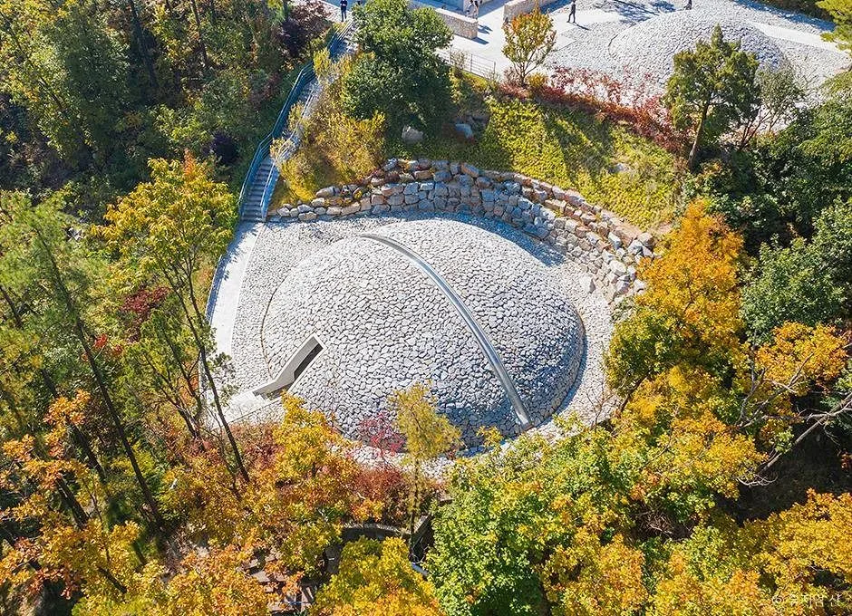
▲ 단풍 든 숲에 둘러싸인 뮤지엄산 스톤가든(항공 촬영) 사진=한국관광공사
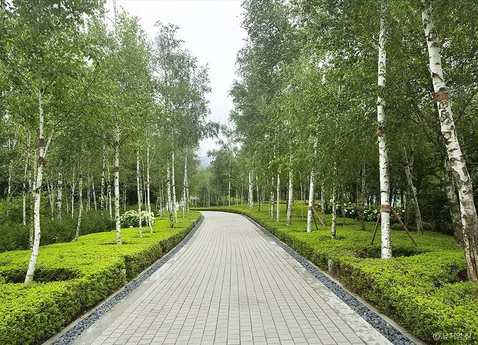
▲ 자작나무가 늘어선 뮤지엄산 산책로 사진=한국관광공사
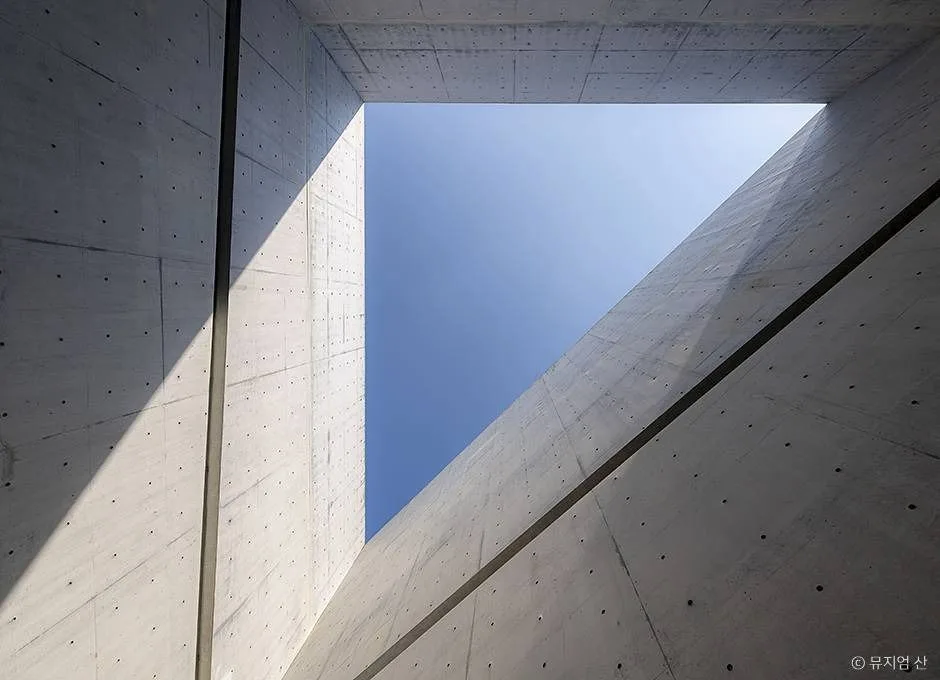
▲ 노출 콘크리트 사이로 하늘이 열리는 뮤지엄산 건축 디테일 사진=한국관광공사
| 항목 | 내용 |
|---|---|
| 주소 | 강원 원주시 지정면 오크밸리2길 260 |
| 운영시간 | 10:00~18:00 (매표 마감 17:00) |
| 휴관일 | 매주 월요일 |
| 입장료 | 기본권 대인 23,000원 / 소인 15,000원 · 명상관+제임스터렐관 통합권 대인 46,000원 / 소인 34,000원 |
| 주차 | 무료 |
| 할인 | 65세 이상 20% (증빙서류 지참), 매월 마지막 주 수요일 50% |
📍 자동차가 없어도 가는 방법은 있지만...
서울 강남고속버스터미널에서 오크밸리행 무료 셔틀버스가 있고, KTX 원주역에서도 셔틀 연계가 가능하다. 하지만 배차 간격이 넓고 환승이 필요해 왕복 일정이 하루 대부분을 차지하게 된다. 자가운전으로는 서울에서 1시간 20분~1시간 40분 정도면 도착한다.
셔틀버스 시간표와 정확한 오시는 길 안내는 공식 홈페이지에서 확인할 수 있다. 뮤지엄산 오시는 길 바로가기
3. "미술관이 아니라 마을 전체가 전시장" — 파주 헤이리예술마을
파주 헤이리예술마을은 단일 미술관이 아니다. 작가·건축가·음악가 등 380여 명이 조합을 이뤄 조성한 예술인 마을로, 목조와 노출 콘크리트가 뒤섞인 개성 있는 건축물 사이에 갤러리와 박물관, 공방, 카페가 흩어져 있다. 마을 진입과 주차 자체는 무료라 차를 세워두고 골목을 걸어 다니며 눈에 띄는 갤러리에 들어가 보는 방식이 잘 맞는다.
▲ 헤이리예술마을 골목의 개성 있는 건축물 사진=한국관광공사
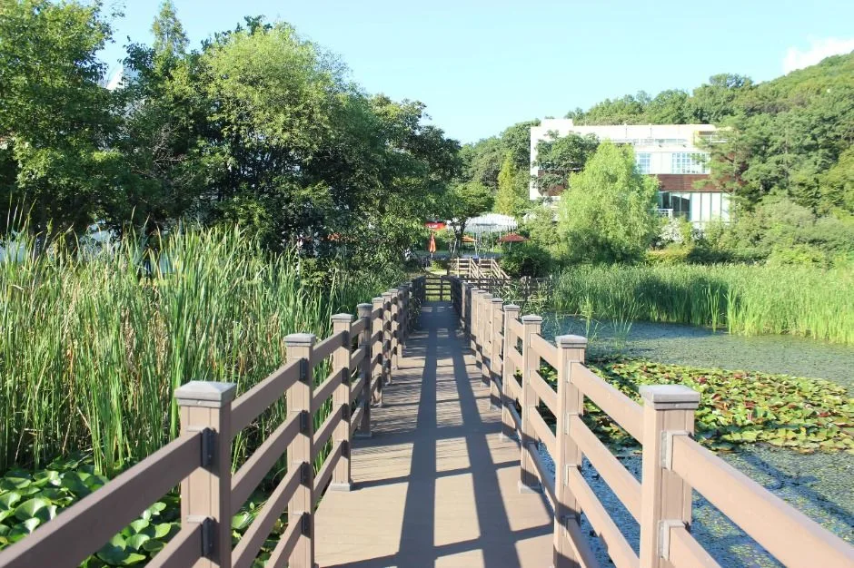
▲ 헤이리예술마을의 연못과 나무 데크 산책로 사진=한국관광공사
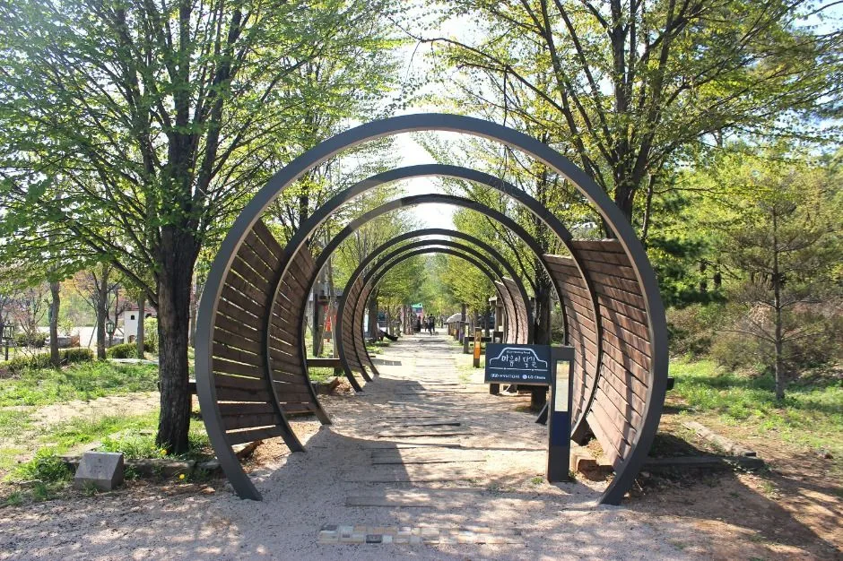
▲ 헤이리예술마을 산책길의 원형 아치 구조물 사진=한국관광공사
| 항목 | 내용 |
|---|---|
| 위치 | 경기 파주시 탄현면 헤이리마을길 일대 |
| 마을 진입·주차 | 무료 (단, 개별 갤러리·박물관 입장료는 시설마다 별도) |
| 대표 인증 박물관·갤러리 | 한향림도자미술관, 한국근현대사박물관, 한길책박물관, 화폐박물관, 갤러리 소소 등 |
| 종합안내 | 헤이리종합안내소 031-946-8551 |
✅ 헤이리 둘러볼 때 참고할 것
· 각 시설은 개별 사업자가 독립 운영하기 때문에 휴관일과 운영시간이 제각각이다. 특정 박물관을 목표로 간다면 방문 전 그 시설에 직접 전화로 확인하는 것이 안전하다
· 마을 규모가 커서 차로 이동하며 구역을 옮기는 사람도 많지만, 도보로도 충분히 다닐 수 있는 거리다
헤이리예술마을 인증 박물관·미술관 목록은 공식 홈페이지에서 확인할 수 있다. 헤이리예술마을 바로가기
4. 담배공장이 미술관이 됐다 — 국립현대미술관 청주
국립현대미술관 청주는 옛 KT&G 연초제조창을 리모델링한 국내 유일의 '수장형' 미술관이다. 일반적인 기획전시실 외에 1~4층 전체가 국가 소장품을 보관하면서 동시에 관람객에게 개방하는 수장고로 구성돼 있어, 미술관이 작품을 어떻게 보관·관리하는지까지 들여다볼 수 있는 구조다.
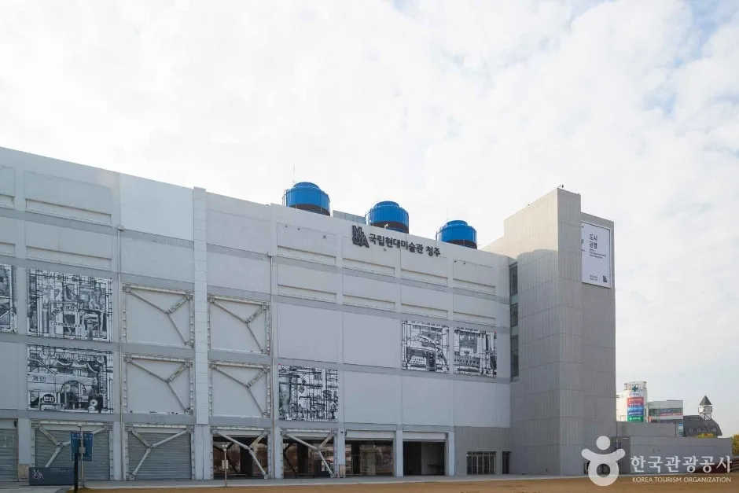
▲ 옛 연초제조창을 리모델링한 국립현대미술관 청주 외관 사진=한국관광공사
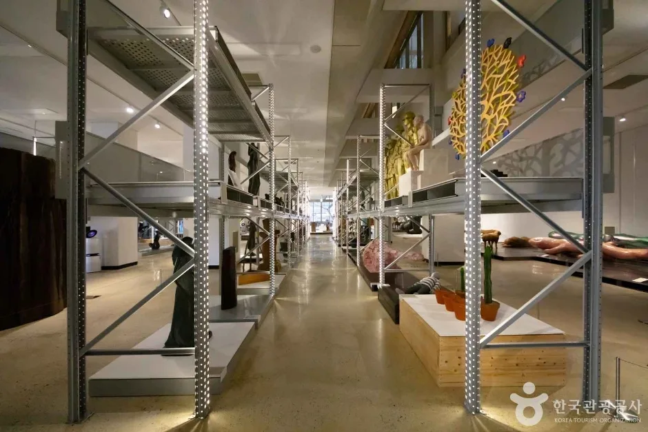
▲ 선반에 작품이 놓인 국립현대미술관 청주 개방형 수장고 사진=한국관광공사
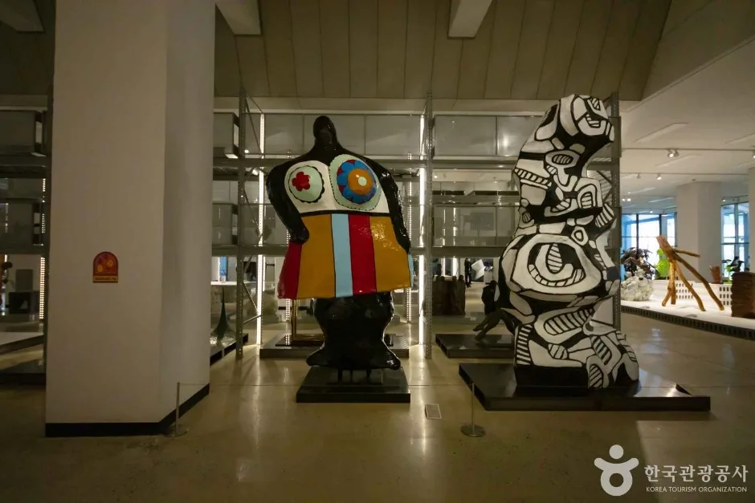
▲ 국립현대미술관 청주 전시장의 조각 작품 사진=한국관광공사
📍 지금 가면 볼 수 있는 것 — 9월 22일부터 새로 열린 수장고
국립현대미술관은 청주관 1층 개방 수장고를 새로 단장해 9월 22일부터 소장품 32점을 새롭게 공개했다. 한국 현대조각 1세대 김세중의 '김 골룸바와 아녜스 자매', 최욱경의 조각 '호기심', 전국광의 국전 대상작 '매스의 비(碑)', 양혜규의 '여성형 원주민' 등이 새로 걸렸다. 작품 운송·보관에 쓰는 크레이트를 전시 구성에 그대로 활용한 점도 특징이다. 2018년 개관 당시 1,220여 점이던 청주관 소장품은 2026년 현재 5,000여 점으로 늘었다.
| 항목 | 내용 |
|---|---|
| 주소 | 충북 청주시 청원구 상당로 314 |
| 운영시간 | 화~일요일 10:00~18:00 (입장마감 17:00) |
| 휴관일 | 매주 월요일, 1월 1일 |
| 입장료 | 1~4층 개방 수장고 무료 / 5층 기획전시실 2,000원(관람 시 1~4층도 함께 관람 가능) |
| 무료관람일 | 매월 마지막 수요일 '문화가 있는 날' |
| 주차 | 무료 |
국립현대미술관 청주의 상세 관람 정보는 공식 홈페이지에서 확인할 수 있다. 국립현대미술관 청주 바로가기
5. 하루에 몇 곳까지 돌 수 있을까 — 코스 짜기 전 체크리스트
네 곳 모두 서울에서 왕복 당일이 가능한 거리지만, 같은 날 두 곳 이상을 묶기엔 만만치 않다. 양평 구하우스와 원주 뮤지엄산은 같은 방향(서울~양평~원주 축)이라 하루에 묶는 사람이 많지만, 각 미술관 자체가 산책형 관람이라 한 곳당 1시간 30분~2시간은 잡아야 한다. 파주 헤이리와 청주 MMCA는 방향이 완전히 달라 별도의 날로 나누는 것이 현실적이다.
⚠️ 출발 전 마지막 체크리스트
· 구하우스·뮤지엄산은 입장 마감 시간이 있다 — 늦은 오후 출발은 피할 것
· 구하우스는 예약제 운영 가능성이 있으므로 출발 전 잔여석 확인
· 헤이리는 목표 시설이 있다면 그 시설에 직접 휴관일 확인
· 청주는 월요일 휴관이므로 주말·평일 화~일 일정으로 잡을 것
· 네 곳 모두 주차는 무료지만, 성수기 주말에는 주차 공간이 금방 찰 수 있어 오전 일찍 출발하는 것이 안전하다
6. 요약
경기 양평 구하우스, 강원 원주 뮤지엄산, 경기 파주 헤이리예술마을, 충북 청주 국립현대미술관 청주 — 이 네 곳은 대중교통보다 자동차로 갈 때 훨씬 여유 있게 즐길 수 있는 지방 미술관들이다.
구하우스와 뮤지엄산은 입장 마감 시간과 예약 여부를 미리 확인해야 하고, 헤이리는 시설별로 운영시간이 제각각이라는 점, 청주 MMCA는 9월 22일부터 새로 단장한 개방 수장고를 볼 수 있다는 점이 2026년 가을 방문 시 챙길 핵심이다.
네 곳 모두 무료 주차가 가능하다는 공통점이 있지만, 성수기 가을 주말에는 오전 일찍 출발하는 편이 여유 있는 관람으로 이어진다.